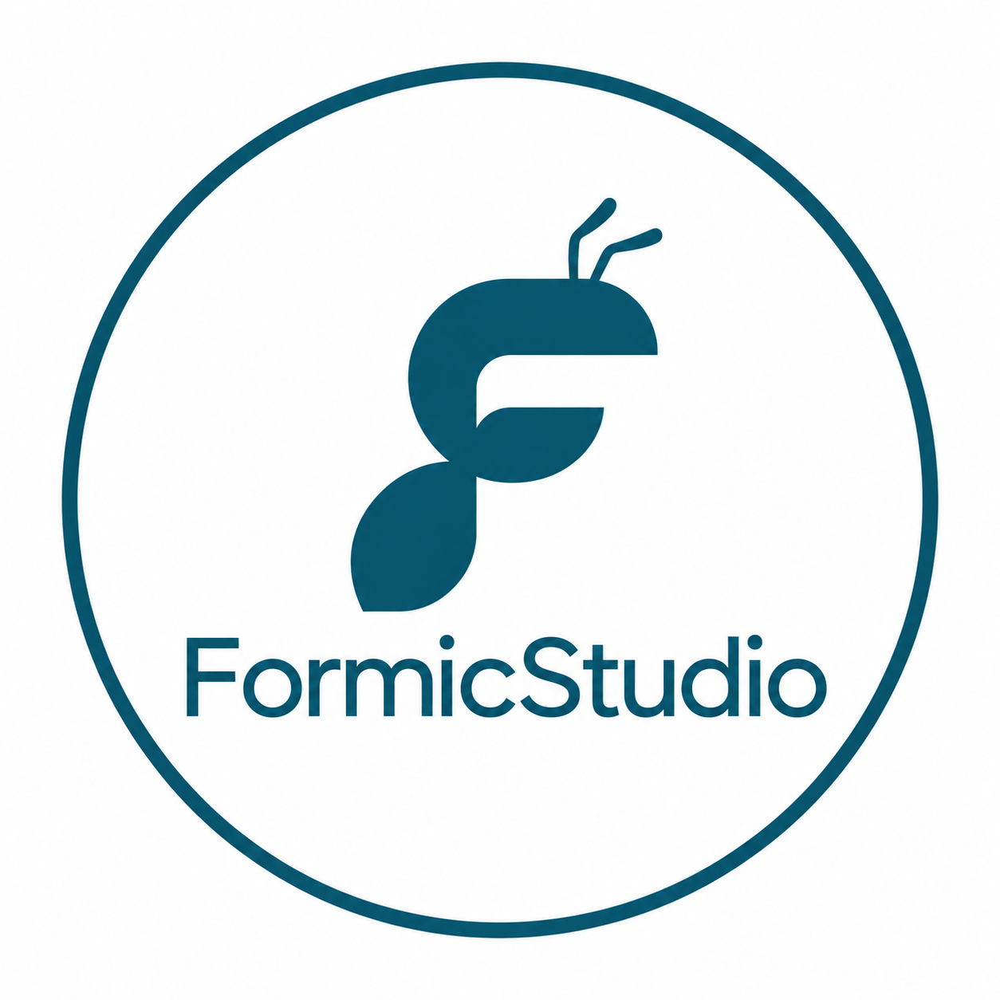

アプリについて
機械工学に関する計算作業を支援するアプリです。入力した計算データと計算履歴は端末内に保存されるため、日々の計算や検討の振り返りに役立てられます。
計算結果は設計・検討の補助としてご利用ください。実際の設計や安全性は、専門知識に基づく確認が必要です。
サポート・お問い合わせ
使い方のご質問、不具合のご報告、ご意見は、こちらの窓口へお寄せください。
不具合のご報告には、端末名・iOSのバージョン・発生時の操作を添えてください。

Formic Studioアプリ開発スタジオ アプリ一覧ENGINEERING CALCULATIONS
設計と現場の計算を、もっと身近に。製造業の設計者や現場技術者に向けたiOSアプリです。
機械工学に関する計算作業を支援するアプリです。入力した計算データと計算履歴は端末内に保存されるため、日々の計算や検討の振り返りに役立てられます。
計算結果は設計・検討の補助としてご利用ください。実際の設計や安全性は、専門知識に基づく確認が必要です。
使い方のご質問、不具合のご報告、ご意見は、こちらの窓口へお寄せください。
不具合のご報告には、端末名・iOSのバージョン・発生時の操作を添えてください。